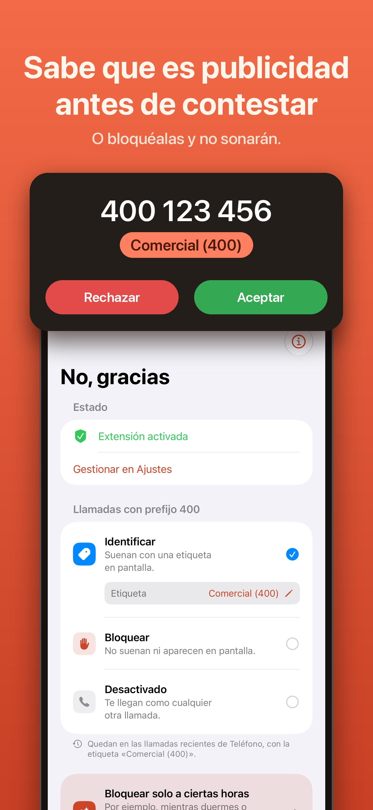
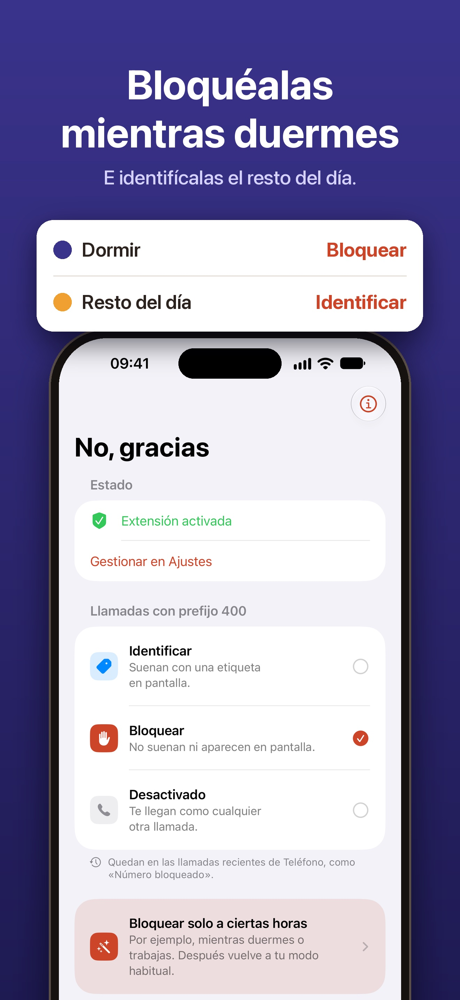
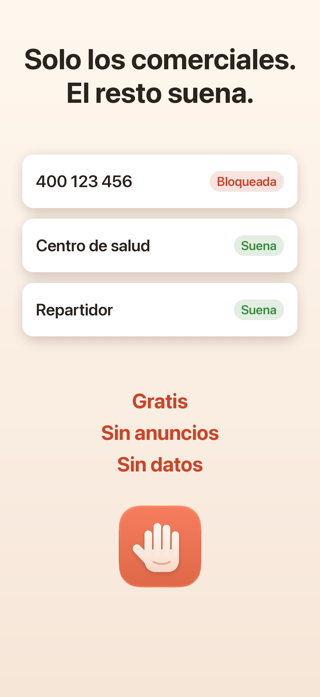

Prensa
Todo lo necesario para escribir sobre «No, gracias». Puedes usar libremente el texto, las capturas y el icono.
En pocas palabras
«No, gracias» es una app gratuita para iPhone que identifica o bloquea las llamadas comerciales con prefijo 400, obligatorio en España desde el 17 de octubre de 2026. No tiene anuncios ni cuentas y no recoge ningún dato: todo ocurre en el iPhone.
Datos
- Nombre: No, gracias
- Desarrollador: Oswaldo Rubio, desarrollador iOS independiente
- Lanzamiento: 7 de noviembre de 2026 (App Store de España)
- Precio: gratis, sin anuncios, sin suscripción ni versión de pago. Donaciones opcionales que no desbloquean nada.
- Requisitos: iPhone con iOS 18 o posterior
- Idiomas: castellano, catalán, euskera, gallego e inglés
- Privacidad: sin servidores, cuentas, analítica ni rastreo
- App Store: apps.apple.com/es/app/id6830892528
Qué hace
- Identificar: la llamada suena, pero en pantalla aparece «Comercial (400)» y decides si contestas.
- Bloquear: las llamadas 400 no suenan ni aparecen, y quien llama no se entera.
- Que cambie sola: bloquea mientras duermes o trabajas con los filtros de concentración, el Centro de Control, Siri o Atajos.
- Excepciones: números 400 concretos que siempre suenan, como el del banco o el seguro.
- Filtro de SMS: oculta los avisos del operador sobre llamadas 400 ya bloqueadas.
La historia
Desde el 17 de octubre de 2026, las llamadas comerciales en España deben salir de números que empiezan por 400. La norma permite reconocerlas, pero no las detiene: siguen sonando. Las alternativas que había cobraban por bloquearlas o mostraban anuncios.
Oswaldo Rubio, desarrollador iOS, creó «No, gracias» para resolverlo gratis y sin recoger datos. La primera versión pasó de idea a app funcionando en menos de 24 horas, desarrollada con la ayuda de Claude, el asistente de IA de Anthropic. Desde entonces ha incorporado automatización, excepciones, un filtro de SMS y cinco idiomas, incluidos el euskera y el gallego, poco habituales en apps de utilidad.
Material
- Icono (1024 × 1024): claro · oscuro
- Capturas de la App Store (1320 × 2868): identificar · bloquear mientras duermes · solo los comerciales
- Capturas de la app: identificar · bloquear · automatizar
- Imagen para redes (1200 × 630): og/es.png


Contacto
Para entrevistas o cualquier dato: info@nogracias.app.


